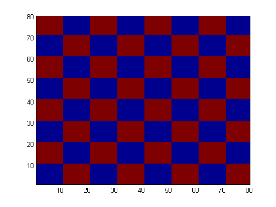
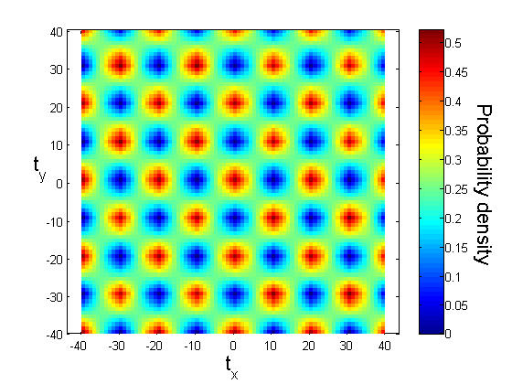

Installing an executing a workflow
Contents
Download a Git Repository
if ~isdir( './SpatialStatisticsFFT' ) system('sudo git clone https://github.com/tonyfast/SpatialStatisticsFFT.git'); end addpath( genpath( './SpatialStatisticsFFT' ) ); mkdir('./assets');
Warning: Directory already exists.
Create a dataset with spatial fields
S.phase = round(checkerboard(10));
Warning: Struct field assignment overwrites a value with class "double". See MATLAB R14SP2 Release Notes, Assigning Nonstructure Variables As Structures Displays Warning, for details.
Compute Spatial Statistics on the phase
S.stats = SpatialStatsFFT( S.phase,[],'display', true ); % Save the displayed spatial statistics S.image{1} = 'testwf-stats-1.png'; S.image{2} = 'testwf-stats-2.png'; S.name = 'Example dataset when using workflows'; saveas( gcf, './assets/testwf-stats-1.png' ); pcolor( S.phase ); saveas( gcf, './assets/testwf-stats-2.png' ); drawnow;
matinpublish( S, 'title', 'Workflow Test Output' )
ans =
phase: [80x80 double]
stats: [81x81 double]
image: {'testwf-stats-1.png' 'testwf-stats-2.png'}
name: 'Example dataset when using workflows'
wrap the output results
S = rmfield( S, 'image' ); wrapout = @(x)setfield( x, 'stats', SpatialStatsFFT( x.phase,[],'display', true ) ); matinpublish( wrapout, S, 'title', 'Workflow Test Execute' ); drawnow;
Create a Report
Create a webpage to illustrate the use of the spatial statistics code. The example is built into the repository we donwloaded it from.
% matinpublish('example.m','title','Spatial Statistics Tutorial');